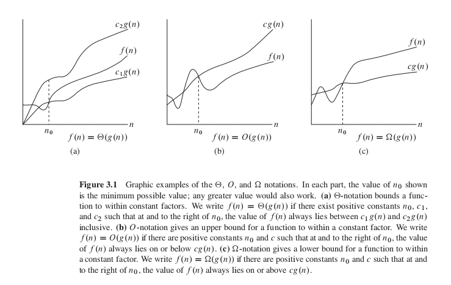
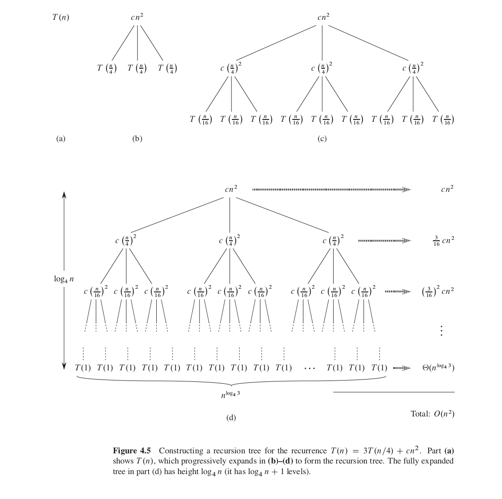
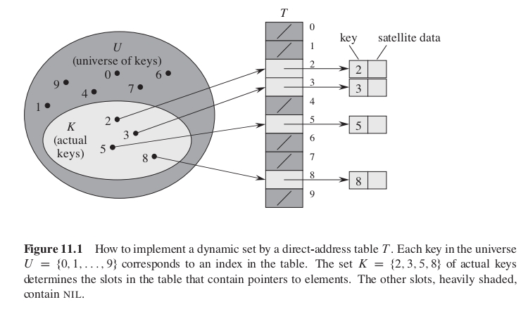
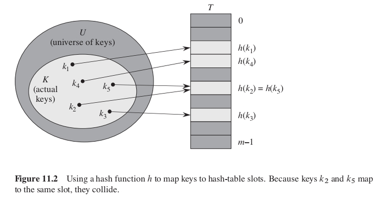
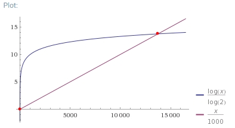

AlgorithmIntroduce
Table of Contents
这篇主要是算法导论相关的笔记。
Foundations
函数的增长

\(\Theta\) 记号
对于一个给定函数 \(g(n)\) ,用 \(\Theta(g(n))\) 来表示函数集合：
\(\Theta(g(n)) = \{f(n):存在常数 c_1,c_2 和 n_0，使对所有的 n \geq n_0 ,有 0 \leq c_1g(n) \leq f(n) \leq c_2g(n)\} \quad 也就是说，对于任一函数 f(n),若存在正常数 c_1,c_2,使当 n 充分大时，f(n)能被夹在 c_1g(n)和 c_2g(n)中间，则 f(n)属于集合 \Theta(g(n))\)
\(\Theta 记号 给出了函数 f(n)的上下界\)
\(O\) 记号
对于一个给定函数 \(g(n)\) ,用 \(O(g(n))\) 来表示函数集合：
\(O(g(n)) = \{f(n):存在常数 c 和 n_0，使对所有的 n \geq n_0 ,有 0 \leq f(n) \leq cg(n)\} \quad 也就是说，对于任一函数 f(n),若存在正常数 c,使当 n 充分大时，f(n)的值都在 cg(n)之下，则 f(n)属于集合 O(g(n))\)
\(O 记号 给出了函数 f(n)的上界\)
\(\Omega\) 记号
对于一个给定函数 \(g(n)\) ,用 \(\Omega(g(n))\) 来表示函数集合：
\(\Omega(g(n)) = \{f(n):存在常数 c 和 n_0，使对所有的 n \geq n_0 ,有 0 \leq cg(n) \leq f(n) \} \quad 也就是说，对于任一函数 f(n),若存在正常数 c,使当 n 充分大时，f(n)的值都在 cg(n)之上，则 f(n)属于集合 \Omega(g(n))\)
\(\Omega 记号 给出了函数 f(n)的下界\)
\(o\) 记号
对于一个给定函数 \(g(n)\) ,用 \(o(g(n))\) 来表示函数集合：
\(o(g(n)) = \{f(n):对任意正常数 c ,存在常数 n_0 > 0，使对所有的 n \geq n_0 ,有 0 \leq f(n) < cg(n)\}\)
\(o 记号 给出了函数 f(n)的非渐近紧确上界\)
\(\omega\) 记号
对于一个给定函数 \(g(n)\) ,用 \(\omega(g(n))\) 来表示函数集合：
\(\omega(g(n)) = \{f(n):对任意正常数 c ,存在常数 n_0 > 0，使对所有的 n \geq n_0 ,有 0 \leq cg(n) < f(n) \}\)
\(\omega 记号 给出了函数 f(n)的非渐近紧确下界\)
渐近记号的解释
\(X(g(n))是一个集合，可以用 f(n) \in X(g(n)) 来表示 f(n)属于 X(g(n))。不过通常写为 f(n) = X(g(n))来表示这种关系。需要注意的是不能写为 X(g(n)) = f(n)\)
一般来说，当渐近记号出现在某个公式中时，我们将其解释为一个不在乎其名称的匿名函数。
递归式
代换法
- 用代换法解递归式需要两个步骤：
- 猜测解的形式
- 用数学归纳法找出使解真正有效的常数。
- 猜测解的形式
- 使用数学归纳法进行证明的步骤
- 数学归纳法第一种形式
- 证明当 m=1 时命题成立。
- 假设 m=n 时命题成立，推导出在 m=n+1 时命题也成立。（n 代表任意自然数）
- 证明当 m=1 时命题成立。
- 数学归纳法第二种形式
- 证明当 m=1 时命题成立
- 假设 m<n 时命题成立，推导出在 m=n 时命题也成立。（n 代表任意自然数）
- 证明当 m=1 时命题成立
- 数学归纳法第一种形式
实例
求递归式 \(T(n) = 2T(\biggl\lfloor \frac{n}{2} \biggr\rfloor) + n\)
\begin{align} &-\quad Step 1\, 猜测解的形式 \nonumber\\ &猜测\quad T(n) = O(nlgn),即存在常数 c 和 n_0 使得 T(n)的值都在 nlgn 之下 \nonumber\\ &-\quad Step 2\, 使用数学归纳法证明 \nonumber\\ &-\quad Step 2.1\, 证明 m=2,3 时成立 \nonumber\\ &n=1 时，T(1) = 2*0 + 1 = 1 > c1lg1=0 \, &(无论 c 取何值都不成立) \nonumber\\ &n=2 时，T(2) = 2*1 + 2 = 4 \leq c2lg2 \, &(c\geq2 时成立) \nonumber\\ &n=3 时，T(3) = 2*1 + 3 = 5 \leq c3lg3 \, &(c\geq2 时成立) \nonumber\\ &-\quad Step 2.2\, 假设 m < n 成立，证明 m=n 时也成立 \nonumber\\ &依据假设有 m < n 成立，所以对于 m=\frac{n}{2} 时，有 T(\frac{n}{2}) \leq c\frac{n}{2}lg\frac{n}{2} \nonumber\\ &T(n) = 2T(\biggl\lfloor \frac{n}{2} \biggr\rfloor) + n \leq 2c\frac{n}{2}lg\frac{n}{2} + n \nonumber\\ &T(n) \leq cnlg\frac{n}{2} + n = cnlgn - cn + n <= cnlgn \quad (c\geq 1 时成立) \nonumber\\ &-\quad Step 2.3\, 依据数学归纳法可以可出结论 \nonumber\\ &所以，当取 c \geq 2 时，T(n) \leq cnlgn。即 T(n) = O(nlgn) \end{align}
求递归式 \(T(n) = 2T(n-1) + 1 \quad (n>0) \quad T(0) = 0\)
\begin{align} &-\quad Step 1\, 猜测解的形式 \nonumber\\ &猜测\quad T(n) = O(2^n),即存在常数 c 和 n_0 使得 T(n)的值都在 2^n 之下 \nonumber\\ &-\quad Step 2\, 使用数学归纳法证明 \nonumber\\ &-\quad Step 2.1\, 证明 m=2,3 时成立 \nonumber\\ &n=1 时，T(1) = 2*0 + 1 = 1 \leq c2^1 \, &(c\geq1 时成立) \nonumber\\ &n=2 时，T(2) = 2*1 + 1 = 3 \leq c2^2 \, &(c\geq1 时成立) \nonumber\\ &n=3 时，T(3) = 2*3 + 1 = 7 \leq c2^3 \, &(c\geq1 时成立) \nonumber\\ &-\quad Step 2.2\, 假设 n=k-1 时成立，证明 n = k 时也成立 \nonumber\\ &依据假设有 T(k-1) \leq c2^{k-1} \nonumber\\ &T(k) = 2T(k-1) + 1 \leq 2c2^{k-1} + 1 \nonumber\\ &T(k) \leq c2^k+1 \nonumber\\ &T(k) \leq c2^k (c\geq 2 时成立) \nonumber\\ &所以，当取 c \geq 2 时，T(n) \leq c2^n。即 T(n) = O(2^n) \end{align}
递归树方法
如下图利用递归树方法求解 \(T(n) = 3T(n/4) + c n ^2\)

主方法
主方法是递归树的一种应用。可以通过递归树来证明主方法。主方法所依赖的主定理如下：
概率分析和随机算法
随机排列数组
function PermuteBySorting(lst) local priority = {} local len = #lst local max_random = len*len*len for i=1,len do priority[i] = random(1, max_random) end -- sort list with priority sort(lst, priority) end function RandomInPlace(lst) local len = #lst for i=1,len do local random_idx = random(i, len) local tmp = lst[i] lst[i] = lst[random_idx] lst[random_idx] = tmp end end
雇佣问题
HIRE-ASSISTANT(n) best = 0 // candidate 0 is a least-qualified dummy candidate for i=1 to n do interview candidate i if candidate i is better than candidate best then best = i hire candidate i
计算雇佣一个新的办公助理的期望次数
生日悖论
球与盒子
序列
在线雇佣问题
Sorting and Order Statistics
比较排序
堆排序
二叉堆在数组中构建的二叉树结构。其主要操作以及对应的时间复杂度如下：
| 操作 | 时间复杂度 |
|---|---|
| Heapify | \(O(lgn)\) |
| HeapBuild | \(O(nlgn)\) 更紧确的上界为\(O(n)\) |
| HeapInsert | \(O(lgn)\) |
| HeapDelete | \(O(lgn)\) |
| HeapExtract | \(O(lgn)\) |
| HeapSort | \(O(nlgn)\) |
堆相关代码实现请参考如下文件
AlgorithmIntroduce/Code_Heap.lua
快速排序
- 快速排序采用了分治法
- 快速排序是一种原地排序，不需要额外空间
快速排序分析
当数据已经升序或降序拍好时，快速排序出现最坏情况
\begin{align} T(n) &= T(0) + T(n-1) + O(n) \nonumber \\ &= O(1) + T(n-1) + O(n) \nonumber \\ &= T(n-1) + O(n) \nonumber \\ &= O(1) + O(2) + \ldots + O(n-1) + O(n) \nonumber \\ &= O(n^2) \nonumber \\ \end{align}
当每次划分都在中间时
\begin{align} T(n) &= 2T(n/2) \nonumber \\ &= O(nlog_2n) \nonumber \\ \end{align}
假设每次划分都为 1/10 9/10
\begin{align} &T(n) = T(\frac{n}{10}) + T(\frac{n9}{10}) + O(n) \nonumber \\ &T(n) = knlog_{\frac{10}{9}}n \nonumber \\ &T(n) = O(nlogn) \nonumber \\ \end{align}
假设一步划分最优，一步划分最坏
\begin{align} &L=Lucky &U=Unlucky &L(n) = 2U(n/2) + O(n) \nonumber \\ &U(n) = L(n-1) + O(n) \nonumber \\ &L(n) = 2(L(\frac{n}{2}-1) + O(\frac{n}{2})) + O(n) \nonumber \\ &L(n) = 2L(\frac{n}{2}-1) + O(n) \nonumber \\ &L(n) = O(nlogn) \nonumber \\ \end{align}
快速排序实现
function Partition(arr, p, q) i = p for j=p+1,q do if arr[j] <= arr[p] then exchange(arr[i],arr[j]) i++ end end exchange(arr[i],arr[p]) return i end function QuickSort(arr, p, q) if p<0 or p>=q then return end i = Partition(arr, p, q) QuickSort(arr, p, i-1) QuickSort(arr, i+1, q) end
随机快速排序
每一次划分之前，将主元素和一个随机的元素交换。
随机快速排序分析
随机快速排序的时间复杂度为 \(O(nlogn)\)
随机快速排序实现
function Partition(arr, p, q) exchange(arr[p], arr[random(p,q)]) i = p for j=p+1,q do if arr[j] <= arr[p] then exchange(arr[i],arr[j]) i++ end end exchange(arr[i],arr[p]) return i end function QuickSort(arr, p, q) if p<0 or p>=q then return end i = Partition(arr, p, q) QuickSort(arr, p, i-1) QuickSort(arr, i+1, q) end
决策树模型
比较排序可以被抽象为决策树。一棵决策树是一棵满二叉树，表示某排序算法作用于给定输入所做的所有比较，而控制结构、数据移动等都被忽略。
线性时间排序
计数排序
计数排序的时间复杂度为 \(\Theta(n)\)
计数排序具有稳定性。排序算法的稳定性是指具有相同值的元素在输出数组中的相对次序与它们在输入数组中的次序相同。
基数排序
如果基数排序用到的稳定排序的时间复杂度为 \(\Theta(n)\) ,基数排序中最大数的位数为 mdn(即 max_digit_number),则基数排序的时间复杂度为 \(\Theta(mdn*n)=\Theta(n)\)
桶排序
桶排序的时间复杂度为 \(\Theta(n)\)
中位数和顺序统计
Randomized_Select 的时间复杂度为 \(\Theta(n)\)
Sorting implement
关于各种排序相关算法的实现，可以参考如下文件：
AlgorithmIntroduce/Code_Heap.lua
AlgorithmIntroduce/Code_Sort.lua
AlgorithmIntroduce/Code_Select.lua
DataStructure
Stack Queue
栈 后进先出
队列 先进先出
LinkList
单链表倒序
void Reverse (Node* list) { Node* pre = null; while(list) { Node* next = list.next; list.next = pre; pre = list; list = next; } return pre; }
SkipList
SkipList 时间复杂度分析
- 两层的 SkipList
对于包含 n 个元素，只有两层的 SkipList，时间消耗为 \(T(n) = |L_1| + \frac{n}{|L_1|} \quad 当|L_1| = \frac{n}{|L_1|}时，取到最小值，即 |L_1|=\sqrt{n}，所以 T(n) = 2\sqrt{n}\) - 三层的 SkipList
三层 SkipList，因为每层最多需要遍历 \(\sqrt[3]{n}\) 个元素， 所以时间消耗为 \(T(n) = 3\sqrt[3]{n}\) - \(log_2n\) 层的 SkipList
当 SkipList 取 \(log_2n\) 层时，SkipList 最优。此时时间消耗为 \(T(n) = log_2n\sqrt[log_2n]{n} = 2log_2n\)
SkipList 高概率最优
对于 n 个节点的 SkipList，每次查找元素的时间消耗高概率为 \(O(lgn)\)
SkipList 高度分析
对每层来说，一个节点会向上增长的概率为 \(\frac{1}{2}\) ，则第 m 层向上增长的概率为 \(\frac{1}{2^m}\)
底层一共有 n 个元素，上升到 m 层时，m 层元素数目的期望为 \(E[C_m] = n\frac{1}{2^m} = \frac{n}{2^m}\)
令 \(E[C_m] \leq 1 则 \frac{n}{2^m} \leq 1 即 n \leq 2^m 所以 lgn \leq m\)
即 当 \(m \geq lgn\) 时，m 层的元素数目小于 1，即 m 层不存在元素了。
SkipList Maintain
- 插入节点
插入新节点的时候随机一个 1 到 100 的数字 randomV，如果 randomV 大于 50，则将这个数提升到更高层的表中，对这个节点继续执行前面的随机操作。 - 删除节点
删除节点的时候，如果该节点在多层中出现，则直接将其在出现的层中都删除掉。
Tree
- 对于二叉树，每一个树的节点用 p,l,r,data 分别表示 指向父亲节点的指针， 指向左孩子的指针，指向右孩子的指针，节点的数据。
- 对于非二叉树，和二叉树同理，每个树的节点用 p,child1,child2 … childn,data 来表示。因为可能有的节点有 n 个孩子，而有的节点只有 1 个或没有孩子, 所以这种方法对于有多个可变数目孩子的树来说会造成空间的浪费。
- 还有一种树的表示形式是，每个树的节点用 p,lChild,rSibling 来表示。这样就不会造成空间的浪费了。
Hash Table
直接寻址表 Direct-address table

缺点：
- 如果关键字的全域 U 很大时，由于内存大小限制，无法在计算机中存储 U 中所有元素。
- 如果关键字的全域 U 和实际关键字集合相差很大时，存储 U 中所有元素会造成很多空间浪费。
散列表 Hash table
散列函数 h 将关键字 k 散列到一个小范围域内，从而减弱直接寻址表缺点的影响。

缺点：
有可能不同的关键字会被 h 函数散列到同一槽上。这种情况被称为发生了碰撞。
链接法解决碰撞
这种方法将 hash 值相同的元素，用链表存储。
通过 hash 表查找某个元素 ki 的算法如下：
void Find(hashTable, ki) { var hashValue = h(ki); Node* list = hashTable[hashValue]; while (list) { if (list.key == ki) { return list.data } list = list.next; } return null; }
装载因子
给定一个能存放 n 个元素的、具有 m 个槽位的散列表 T，定义 T 的装载因子 \(\alpha\) 为 n/m，即一个链中平均存储的元素数。
散列函数
好的散列函数的特点
散列函数应该尽可能让关键字平均分配到不同的槽上，这样可以保证碰撞发生的概率最小。
将关键字解释为自然数
例如，一个字符串关键字可以被解释为按适当的基数符号表示的整数。pt 可以被解释为十进制整数对(112,116),因为 ASCII 字符集中，p 为 112，t 为 116。按照 128 为基数来表示，pt = 112*128+126 = 14452；
除法散列法
除法散列中，需要注意 m 的选择。例如，当 m 为 \(2^p\) 时，h(k)的值为 k 的 p 个最低位数字。
| 公式 | 被取模数的二进制 | 结果的二进制 |
|---|---|---|
| 8%7 | 1000 | 001 |
| 9%7 | 1001 | 010 |
| 10%7 | 1010 | 011 |
| 11%7 | 1011 | 100 |
| 8%8 | 1000 | 000 |
| 9%8 | 1001 | 001 |
| 10%8 | 1010 | 010 |
| 11%8 | 1011 | 011 |
从上表可以看出，当选择 \(m=2^3=8\) 时，他们之间有数据排布关系，h(k)的值为 k 的 p 个最低位数字。而当选择 \(m=7\) 时，则没有这种关系。
m 通常选为和 2 的整数幂不太接近的指数。
乘法散列法
乘法散列的优点是，它对 m 的选择没有特别的要求。但是，一般会选择 \(m=2^p\) ，因为这样方便实现散列函数。
全域散列 Universal hashing
定义
随机地选择散列函数，使之独立于要存储的关键字，这种方法被称作全域散列。严格的定义如下：
设 H 为有限的一组散列函数，它将给定的关键字域 U 映射到{0,1,……,m-1}中。如果对于每一个不同的关键字 \(k,l \in U\) ，满足 \(h(k)=h(l)\) 的散列函数 \(h \in H\) 的个数至多为 \(|H| / m\) 。那么就称这样的一个函数组是全域的。
\(|H|\) 为集合 H 中函数的个数。上面定义的另一种解释是，如果从 H 中随机取一个散列函数，当关键字 \(k \neq l\) 时，两者发生碰撞的概率 \(P(h(k)=h(l)) \leq \frac{|H|/m}{|H|}\) ， \(\frac{|H|/m}{|H|} = \frac{1}{m}\) 。
定理 1
如果 h 选自一组全域的散列函数，并用于将 n 个关键字散列到一个大小为 m 的用链接法解决碰撞的表 T 中。如果关键字 k 不在链表中，k 被散列至其中的链表的期望长度 \(E(n_{h(k)}) \leq \alpha=\frac{n}{m}\) (说明： \(n_{h(k)}\) 为链表 T[h(k)]的长度)。如果关键字 k 在链表中，则包含关键字 k 的链表的期望长度 \(E(n_{h(k)}) \leq 1+\alpha = 1+\frac{n}{m}\)
也就是说使用全域的散列函数，可以将 key 均匀地散列到各个链表中。
证明
\begin{eqnarray} c_{kl} = c\{h(k)=h(l)\} = \begin{cases} 1 & h(k)=h(l) \\ 0 & h(k) \leq h(l) \\ \end{cases} \nonumber \end{eqnarray}
定义指示器随机变量如下
根据全域散列函数定义 \(Pr\{h(k)=h(l)\} \leq 1/m\) ，即 \(E[c_{kl}] \leq 1/m\) 。
\begin{equation} C_k = \sum_{l \in T \, l \neq k}c_{kl} \nonumber \end{equation}
定义随机变量 \(C_k\) ，它表示对于每个关键字 k，非 k 的、和 k 散列到同一槽位中的其他关键字的数目。
从而有：
\begin{equation} E[C_k] = E[\sum_{l \in T \, l \neq k}c_{kl}] = \sum_{l \in T \, l \neq k}E[c_{kl}] \leq \sum_{l \in T \, l \neq k}\frac{1}{m} = \frac{n-1}{m} \end{equation}
构造一种全域哈希的方案
- 第一种方案
设定 m 为素数，用 m 将关键字 k 分解为 r+1 位数字，即用 m 进制来表示关键字 k。
\begin{equation} h_a(k) = (\sum_{i=0}^{r}a_i k_i)\, mod\, m \end{equation}
\(k = \{k_0\,k_1\,k_2\, \ldots \,k_r\}\) 其中 \(0 \leq k_i \leq m-1\)
随机地选择一个数字 \(a=\{a_0\,a_1\,a_2\, \ldots \,a_r\}\) 其中 \(0 \leq a_i \leq m-1\)
即 \(h_a(k)\) 为 a 和 k 的点积再对 m 取模。
这样构造出来的全域哈希函数组中一共有 \(m^{r+1}\) 个哈希函数，因为 a 一共有 r+1 位，每一位可以有 m 种选择。
证明
\begin{align} &h_a(x)=h_a(y) \nonumber \\ &\sum_{i=0}^{r}a_i x_i \equiv \sum_{i=0}^{r}a_i y_i \quad mod \quad m \nonumber \\ &\sum_{i=0}^{r}a_i (x_i-y_i) \equiv 0 \quad mod \quad m \nonumber \\ &a_0(x_0-y_0)+\sum_{i=1}^{r}a_i (x_i-y_i) \equiv 0 \quad mod \quad m \nonumber \\ &a_0(x_0-y_0) \equiv -\sum_{i=1}^{r}a_i (x_i-y_i) \quad mod \quad m \nonumber \\ &\because x_0 \neq y_0 \therefore \exists(x_0-y_0)^{-1} \\ &a_0 \equiv -(\sum_{i=1}^{r}a_i (x_i-y_i))(x_0-y_0)^{-1} \quad mod \quad m \nonumber \\ \end{align}
\(x = \{x_0\,x_1\,x_2\, \ldots \,x_r\}\) 其中 \(0 \leq x_i \leq m-1\)
\(y = \{y_0\,y_1\,x_2\, \ldots \,y_r\}\) 其中 \(0 \leq y_i \leq m-1\)
假设这两个不同的关键字 x，y 在第 0 位不同。如果哈希函数 \(h_a\) 使 x 和 y 关键字散列到同一个链表中，则有下面等式
所以，对于任意 \(a_1 a_2 \ldots a_r\) 只存在唯一的 \(a_0\) 使得 x 和 y 被散列到同一个链表中。
\(h_a\) 的个数为 \(m*m \ldots *m*1 = m^r = \frac{|H|}{m} = \frac{m^{r+1}}{m}\)
- 第二种方案
选择一个足够大的素数 p,使得每一个可能的关键字 k 都落在 0 到 p-1 的范围内（包括 0 和 p-1）。设 \(Z_p\) 表示集合｛0,1, \(\ldots\) ,p-1｝, \(Z_{p}{*}\) 表示集合｛1, \(\ldots\) ,p-1｝。对于任何 \(a \in Z_{p}^{*}\) 和任何 \(b \in Z_p\) ,定义散列函数如下：
\(h_{ab}(k) = ((ak+b) \, mod \, p) \, mod \, m\)
所有这样的散列函数构成的函数簇为
\(H_{pm} = \{h_{ab}:a \in Z_{p}^{*}, b \in Z_p\}\)
该函数簇是全域的。
开放寻址法
在开放寻址法中，所有元素都存储在散列表中。即，每个表项中或存储一个元素，或存储 NIL 值表示不存储任何元素。
线性探查
给定一个散列函数 h': U->{0,1,…,m-1} （该函数被称为辅助散列函数），线性探查使用的散列函数为：
在线性探查方法中，初始探查位置确定了整个序列，故只有 m 种不同的探查序列。
- 缺点
线性探查存在一次群集问题。随着时间推移，连续被占用的槽不断增加，平均查找时间也不断随着增加。
二次探查
二次探查使用的散列函数为：
和线性探查一样，初始探查位置决定了整个序列，所以也只有 m 中不同的探查序列。
- 缺点
- 为了充分利用散列表，c1,c2,m 的值选取要受到限制
- 如果两个关键字的初始探查位置相同，那么它们的探查序列也是相同的，这种群集被称为二次群集。
- 为了充分利用散列表，c1,c2,m 的值选取要受到限制
- 实例
当 m 为 2 的 n 次幂时，选择 c1=c2=1/2,i 从 0 增加到 m 可以探查一遍所有的元素。
双重散列
双重散列是用于开放寻址法的最好的方法之一，它使用的散列函数为：
双重散列使用了 \(\Theta(m^2)\) 种探查序列。而线性探查和二次探查都只使用了 m 中探查序列。
下面是一组可行的双重散列函数：
开放寻址散列的分析
- 给定一个装载因子为 \(\alpha = n/m < 1\) 的开放寻址散列表，并假设是均匀散列的，则对于一次不成功的查找，其期望的探查次数至多为 \(1/(1-\alpha)\)
完全散列 Perfect Hashing
给定 n 个关键字，构造一个静态的 hash 表，该表的大小 \(m=O(n)\) ，在最坏的情况下，查询某个关键字的时间复杂度为 \(O(1)\) ，构造出满足这些条件的哈希被称为完全哈希或完美哈希 Perfect Hashing。
构造完美哈希的一种方法是使用两级哈希，并且每一级哈希都为全域哈希。要满足完美哈希就需要第二级全域哈希不会造成冲突。设 \(n_i\) 个关键字被哈希到一级哈希表的第 i 个槽内，在二级哈希表中使用 \(m_i = n_i^2\) 个空间来存储这 \(n_i\) 个元素，则可以使二级哈希不会造成冲突。
证明 1：二级全域哈希不会造成冲突
\begin{align} &随机变量 X 表示哈希产生冲突 \nonumber \\ &E[X] = P\{X\} = \frac{n_i(n_i-1)}{2} \frac{1}{n_i^2} = \frac{1-1/n_i}{2} < \frac{1}{2} \nonumber \\ &依据马尔可夫不等式可得： \nonumber \\ &P\{X \geq t\} \leq \frac{E[X]}{t} \nonumber \\ &P\{X \geq 1\} \leq \frac{1/2}{1} \nonumber \\ &P\{X \geq 1\} \leq \frac{1}{2} \nonumber \\ \end{align}
证明 2：二级哈希的存储空间复杂度为 \(O(n)\)
\begin{align} &E[totalStorage] = n + E[\sum_{i=0}^{m-1}\theta(n_i^2)] = O(n) \nonumber \end{align}
取第一级 hash 表的大小 \(m=n\) ，随机变量 \(n_i\) 表示哈希到第 i 个槽的关键字的数目，在二级哈希表中槽的个数 \(m_i=n_i^2\) 则：
HashTable implement
HashTable 相关算法的实现：
AlgorithmIntroduce/Code_Hash.lua
Binary Search Trees
二叉查找树中关键字的存储方式满足以下性质：
设 x 为二叉查找树中的节点。如果 y 是 x 的左子树中的节点，则 key[y]<=key[x]。如果 y 是 x 右子树中的节点，则 key[x]<=key[y]。
二叉查找树的操作
遍历 查找 最大关键字元素和最小关键字元素 前驱和后继 插入和删除
具体实现可以参考如下文件：
AlgorithmIntroduce/Code_BST.lua
随机构造的二叉查找树
随机二叉查找树高度的期望值为 \(log_2n\)
证明：
\begin{align} &2^{E[X_n]} \leq E[2^{X_n}] = E[Y_n] = O(n^3) \nonumber \\ &对上面的公式两边取对数可得: \nonumber \\ &E[X_n] \leq log_2O(n^3) = 3log_2n+O(1) \nonumber \\ \end{align}
step1- 证明 Jensens 不等式
\(f(E[X]) \leq E[f(X)] \quad f(X)为凹函数。\)
step2- 不直接分析 BST 的高度随机变量 \(X_n\) ,而是分析 \(X_n\) 的凹函数，这里分析的是 \(Y_n = 2^{X_n} \, 即 X_n 的指数函数\)
step3- 证明 \(E[Y_n] = O(n^3)\)
step4- 证明结论
Balance Search Trees
平衡搜索树的数据结构维护一个 n 个元素的动态集的时间为 \(log_2n\) ，树的高度为 \(O(log_2n)\)
常见的平衡搜索树有：
- AVL Trees
- 2-3 Trees
- 2-3-4 Trees
- B-Trees
- Red Black Trees
- Skip lists
- Treaps
Red-Black Trees
红黑树是一种二叉搜索树，其中每个节点包含一个 color 属性，并且每个节点满足下面的条件
- 每个节点为红色或者黑色
- 根节点和叶子节点都为黑色
- 每个红色节点的父节点都为黑色 即每个红色节点的两个子节点都为黑色节点
- 对于每个节点，从该节点到其子孙节点(叶子节点)的所有路径上包含相同数目的黑节点
RBTree 的高度
包含 n 个关键字(内节点)的红黑树，它的高度满足 \(h \leq 2log_2(n+1) = O(log_2n)\)
证明
将每个红节点并入它的黑色父节点中，会形成一个 2-3-4 树。
- 2-3-4 树的每一个内节点中包含 2-4 个子节点
- 2-3-4 树的所有叶子节点有相同的深度，该深度等于叶子节点的黑高度
假设 生成的该 2-3-4 树的高度为 \(h'\) ，平衡二叉树外节点的个数比所有内节点个数多 1，所以，原来红黑树的外节点数为 \(n+1\) ，所以，该 2-3-4 树的叶子节点的个数 \(leaves = n+1\) 。
\begin{align} &而叶子节点的个数满足下面不等式： \nonumber \\ &2^{h'} \leq leaves \leq 4^{h'} \nonumber \\ &2^{h'} \leq n+1 \nonumber \\ &h' \leq log_2(n+1) \nonumber \\ &h \leq 2h' \leq 2log_2(n+1) \nonumber \\ \end{align}
- 2-3-4 树的每一个内节点中包含 2-4 个子节点
RBTree Insert
function RBTree_Insert(T, x) Tree_Insert(T, x) color[x] = RED while x!=root[T] and color[p[x]]==RED do if p[x] == left[p[p[x]]] then -- case A x 的父亲为左节点 y = right[p[p[x]]] if color[y] == RED then -- case A-1 x 的叔叔为红色 color[p[x]] = BLACK color[y] = BLACK color[p[p[x]]] = RED x = p[p[x]] elseif x == right[p[x]] then -- case A-2 x 的叔叔为黑色，并且 x 为右节点 x = p[x] LEFT-Rotate(T,x) end -- x == left[p[x]] -- case A-3 x 的叔叔为黑色，并且 x 为左节点 color[p[x]] = BLACK color[p[p[x]]] = RED RIGHT-Rotate(T,p[p[x]]) else -- p[x] == right[p[p[x]]] -- case B print("same as case A") end end color[root[T]] = BLACK end
RBTree Delete
- case1 x 的兄弟 w 是红色的
- case2 x 的兄弟 w 是黑色的，而且 w 的两个孩子都是黑色的
- case3 x 的兄弟 w 是黑色的，w 的左孩子是红色的，右孩子是黑色的
- case4 x 的兄弟 w 是黑色的，而且 w 的右孩子是红色的
Red-Black Tree 实现
具体实现参考下面文件：
AlgorithmIntroduce/Code_RBT.lua
Augmenting Data Structures
动态顺序统计
用扩展的红黑树来实现动态顺序统计，OS-Select 和 OS-Rank 的时间复杂度为 \(lg(n)\) .
为什么不在红黑树中直接记录节点的秩？
秩 即为元素在序列中的顺序值。
因为这样做的话，添加或删除节点，需要修改很多节点的秩，这样维护红黑树的时间复杂度为 \(O(n)\) 。
数据结构扩展
数据结构扩展的 4 个步骤：
- 选择基础数据结构
- 确定要在基础数据结构中添加哪些信息
- 验证可用基础数据结构上的基本修改操作来维护这些添加的信息
- 设计新的操作。
以动态顺序统计为例来说，整个过程为以下步骤：
- 选择红黑树来作为基础数据结构
- 在基础数据结构中添加额外的 size[x] 信息，size 为以 x 节点为根的子树的节点数目
- 插入-删除-节点旋转等操作对新加的 size 信息是可维护的。
[重新实现这些修改操作，来支持对 size 信息的维护] - 设计新的操作：OS-Select 和 OS-Rank。
以区间树为例来说，整个过程为以下步骤：
- 选择红黑树来作为基础数据结构。在基础数据结构中存储区间信息，并以区间的低端点作为节点的关键字
- 在基础数据结构中添加额外的 max[x]信息，max[x]为以 x 节点为根的子树中端点最大的数值。
- 重新实现这些修改操作，来支持对 max 信息的维护
- 设计新的操作：Interval_Search(T, i)
Advanced Design And Analysis Techniques
动态规划法
详细内容请参考本博客 DynamicProgramming 一文。
贪心算法
贪心算法的特征
- 一个全局最优解可以通过局部最优选择来达到。换句话说就是，当我们考虑做选择时，我们只考虑对当前问题最佳的选择而不考虑子问题的结果。
- 在贪心算法中，我们做的总是当前看似最佳的选择，然后再解决选择之后所出现的子问题。贪心算法所做的当前选择可能要依赖于已经做出的所有选择，但不依赖于有待做出的选择或子问题的解。因此，贪心策略通常是自顶先下，一个一个地做出贪心选择，不断地将给定的问题实例归约为更小的问题。
平摊分析
平摊分析是分析一系列数据结构操作的平均时间消耗。即，n 个操作总的时间消耗为 \(C\) ，则一个操作的的时间消耗为 \(\frac{C}{n}\) 。
聚集分析
通过求总的时间消耗 \(C\) ，然后除以操作数目 \(n\) 得出每个操作的平摊代价。
\(c = \frac{C}{n}\)
记账方法
通过为不同的操作收取不同的费用，操作没有花费掉的费用存入银行，用总价格 \(P\) 减去银行的存款 \(B\) 然后再除以总的操作数 $n$。
\(总的平摊代价 C = P-B\)
\(每个操作的平均平摊代价 c = \frac{P-B}{n}\)
\(在 n 个操作中，令第 i 个操作的实际代价为 c_i,第 i 个操作的平摊代价为\widehat{c_i},则对于 n 个操作的所有序列需要满足 \sum_{i=1}^n\widehat{c_i} \geq \sum_{i=1}^nc_i, 这样总的平摊代价就是实际代价的一个上界。\)
势能方法
势能方法中不是将已预付的工作作为存储在数据结构特定对象中的存款来表示，而是表示成一种“势能”或“势”，它在需要时可以释放出来，以支付后面的操作。势是与整个数据结构而不是其中的个别对象发生联系的。
\(\widehat{c_i} = c_i + \Phi(D_i) - \Phi(D_{i-1})\)
\(\sum_{i=1}^n\widehat{c_i} = \sum_{i=1}^n(c_i + \Phi(D_i) - \Phi(D_{i-1})) = \sum_{i=1}^nc_i + \Phi(D_i) - \Phi(D_0)\)
如果能定义一个势能函数 \(\Phi\) 使得 \(\Phi(D_i) \geq \Phi(D_0)\) ,则总的平摊代价就是实际代价的一个上界。
Graph Algorithms
图的基本算法
图的表示
- 图的数学描述
G=(V,E) 表示拥有顶点集合 V 和边集合 E 的图 G。|V|表示顶点的数量，|E|表示边的数量 - 邻接矩阵
空间复杂度为 \(|V|^2\)
矩阵中所存储的数值，可用来表示图中边的权值 - 邻接表
如果 G 是一个有向图，则所有邻接表的长度之和为|E|。如果 G 是一个无向图，则所有邻接表的长度之和为 2|E|。不论是有向图还是无向图，邻接表的空间复杂度为 \(O(V+E)\)
当 E 远小于 \(|V|^2\) 时，采用邻接表更省空间。
邻接表中存储的节点可以携带权值，表示当前顶点到该节点的权值大小。
邻接表在需要确定图中边(u,v)是否存在，只能在邻接表 Adj[u]中搜索是否存在 v。
广度优先搜索
广度优先搜索的时间复杂度为 \(O(V+E)\)
搜索过程中，通过给节点上色来避免节点重复被访问
广度优先搜索需要利用队列来保证搜索过程基于广度优先。
深度优先搜索
深度优先搜索的时间复杂度为 \(O(V+E)\)
搜索过程中，通过给节点上色来避免节点重复被访问
最小权生成树
Minimum Spanning Trees
最小生成树算法 Prim_MST 的思路为 遍历所有顶点，每次取出度最小的节点 NodeMin 进行处理，处理过程中遍历 NodeMin 节点的所有邻接节点为他们更新最小出度值。需要注意的是处理邻接节点时，需要判断邻接节点是否已经被当做 NodeMin 处理过，若是，则不能再次更新其出度。
Prim_MST 的时间复杂度如下：
| 最小优先队列数据结构 | 时间复杂度 |
|---|---|
| 数组 | \(O(V^2+E)=O(V^2)\) |
| 二叉堆 | \(O((V+E)lgV)\) |
| 斐波那契堆 | \(O(VlgV+E)\) |
应用
最小生成树可以用来解决整体耗费最小的问题。如下面所述问题
- 旅游路线选择
N 个旅游地点都得去，但是要总路费最小。 - 多个城市之间电缆架设等问题
N 个城市都得连接，但是要总的电缆使用最少。
最短路径问题
单源最短路径
单源最短路径 Dijkstra 的思路为 维护一个集合 \(S\) ,让该集合内的所有元素到源点 \(s\) 的距离为最短距离, 然后不断扩大这个集合让其包含所有的顶点。为了保证新加入集合 \(S\) 的元素符合条件，必须取 \(V-S\) 中距离 \(S\) 最小的元素。具体操作是，从源点开始对图进行广度优先遍历，判断当前顶点的邻接顶点到源点的距离是否比之前记录的距离短，如果是则更新邻接顶点的父节点和其到源点的距离，选出离源点最近的节点进行下次循环操作。
Dijkstra_SingleSourceShortestPath 的时间复杂度如下：
| 最小优先队列数据结构 | 时间复杂度 |
|---|---|
| 数组 | \(O(V^2+E)=O(V^2)\) |
| 二叉堆 | \(O((V+E)lgV)\) |
| 斐波那契堆 | \(O(VlgV+E)\) |
Graph Implement
关于图的各种基础算法的实现，可以参考如下文件：
AlgorithmIntroduce/Code_Graph.lua
数学概念
对数
对数的性质
概率论
随机试验
在概率论中把符合下面三个特点的试验叫做随机试验：
- 一次试验结果的随机性，即进行一次试验之前无法确定哪一个结果会出现。
- 全体测试结果的可知性，即每次试验的可能结果不止一个，并且能事先明确试验的所有可能结果。
- 可重复性，即可以在同一条件下重复进行试验。
随机变量
设 E 是一个随机试验，其样本空间为 S，若对每一个样本点 \(e \in S\) ，都有唯一确定的实数 X(e) 与之对应，则称 S 上的实值函数 X(e) 是一个随机变量（简记为 X）。
- 实例一
随机投掷一枚硬币，可能的结果有正面朝上 ，反面朝上两种 ，若定义 X 为投掷一枚硬币时朝上的面 ， 则 X 为一随机变量，当正面朝上时，X 取值 1；当反面朝上时，X 取值 0。 - 实例二
又如，掷一颗骰子，它的所有可能结果是出现 1 点、2 点、3 点、4 点、5 点和 6 点 ，若定义 X 为掷一颗骰子时出现的点数，则 X 为一随机变量，出现 1，2，3，4，5，6 点时 X 分别取值 1，2，3，4，5，6。
指示器随机变量
给定一个样本空间 S 和事件 A，那么事件 A 对应的指示器随机变量：
期望
离散型随机变量的一切可能的取值 xi 与对应的概率 Pi(=xi)之积的和称为该离散型随机变量的数学期望（设级数绝对收敛），记为 E（x）。
设连续性随机变量 X 的概率密度函数为 f(x)，若积分绝对收敛，则称积分的值为随机变量的数学期望，记为 E(X)。
http://www.zhihujingxuan.com/19043.html
马尔可夫不等式证明
组合数学
TODO 卡特兰数
Q&A
为什么 cocos2d-x js 和 c++对象的映射采用 hash table 而不使用 dictionary 呢？
hash table 的查询效率更高，而 c++和 javascript 交互的时候，需要对该表进行大量查询。
采用链接法处理冲突时，hash table 的平均查询效率为 n/m。
dictionary 的平均查询效率为 h=log(n) 。
当 m=1000 时，n<13746 时，哈希表的查询效率都比 dictionary 要高。

关于 std::unordered_map
标准库的 std::unordered_map 内部实现为 hash 表，并且该哈希表的默认最大装载因子 max_load_factor 为 1，当哈希表的装载因子 load_factor 大于等于 max_load_factor 时，会触发 rehash 方法，增大 bucket_count 数目，重新生成 hash 表。
rehash 方法的平均复杂度为 存储元素的个数( \(\frac{n}{m}\) )，最坏复杂度为 存储元素个数的二次方( \(\frac{n(1+n)}{2}\) 所有元素被散列到同一个槽内)。
- 参考资料
cpp 官方文档 http://www.cplusplus.com/reference/unordered_map/unordered_map/rehash/
参考资料
- 对数公开课
http://open.163.com/special/Khan/logarithms.html - 算法导论公开课
http://open.163.com/special/opencourse/algorithms.html - http://www.bilibili.com/video/av2253077/
- 全域哈希和完全哈希公开课笔记
http://www.cnblogs.com/udld/p/4299695.html - 什么是动态规划
https://www.zhihu.com/question/23995189
https://www.zhihu.com/question/23995189/answer/35429905 - Advanced Data Structures 公开课
MIT 官网视频
https://ocw.mit.edu/courses/electrical-engineering-and-computer-science/6-851-advanced-data-structures-spring-2012/lecture-videos/
Bilibili 视频
http://www.bilibili.com/video/av3372873/